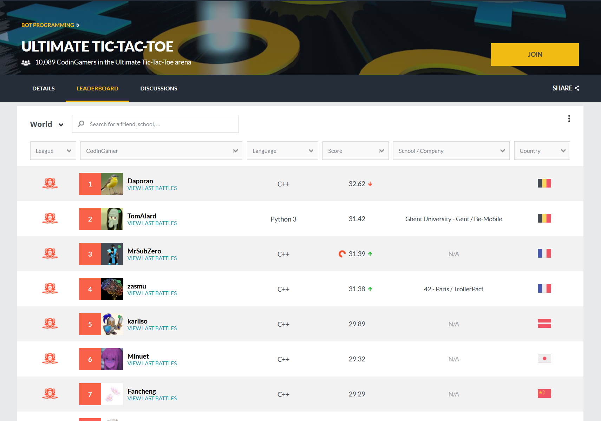
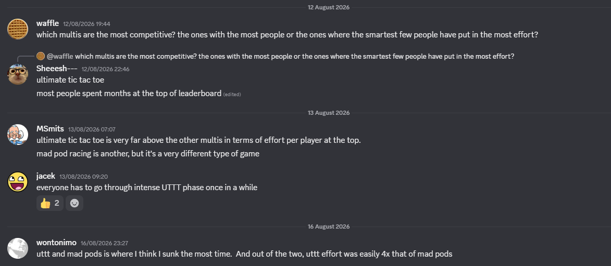

On the 14th of March 2018, CodinGame released the Ultimate Tic-Tac-Toe (UTTT) bot programming arena. Today, the arena is considered by far the most competitive of its kind on CodinGame, and the #1 spot remains fiercely contested between me and three other nerds with nothing better to do. But how did things get to this point? What even is UTTT? And why is my submission in Python, a notoriously slow language? All will be answered below.

The concept of a bot programming competition on CodinGame is simple: Build a program that plays the given game, submit your code, and the arena matches you up against other users' bots to determine your ranking. The site compiles and runs your code on the server, and communication with the game engine is done with stdin/stdout.
The site stores all submissions indefinitely and runs hundreds of games per submission to determine an accurate rating. To keep costs manageable, submissions face three hard constraints:
At first glance, these restrictions might feel very limiting if you're trying to build a serious bot, but they're actually a stroke of unintended genius! Just this month, Stockfish's testing framework 'Fishtest' used over 73 CPU years of volunteered compute to test whether proposed changes gain or lose Elo. Solo developers clearly don't have access to that kind of compute.
Luckily, the 1 vCPU/100 ms limit per turn makes it very easy to bang out a few thousand self-play games on consumer hardware to figure out if a change was positive. The 100k character limit is also very relevant: You cannot just show up with a massive neural network trained on a GPU cluster, or a huge opening book. These limitations level the playing field, so that anyone with a decent gaming PC can realistically compete at the highest level.
Ultimate Tic-Tac-Toe is played on a 3×3 grid of mini-boards. The rules are simple:
To reduce the number of draws, the CodinGame arena adds one more rule: If all mini-boards are decided and no player managed to make a line, the winner is the player that won the most mini-boards. If that is also tied (e.g., 4 boards for X, 4 boards for O, 1 board drawn), then the game is declared a draw.
The rules can be a bit clunky to describe precisely, but they're very intuitive to grasp. Try clicking around on the board below!
CodinGame hosts almost a hundred bot programming competitions, so why is UTTT special? Well, the elegant ruleset makes it easy to pick up. Unlike in, say, chess, you don't have to worry about implementing threefold repetition, the fifty-move rule, or castling rights correctly and efficiently in every possible situation. In fact, my move generation logic only needs about 200 lines of code!
Additionally, the game is not solved. Opening books, which many players dislike facing, don't really help either, as it is genuinely unclear what the best move is as soon as ply 2.1 There is also no good, simple heuristic evaluation function for a board position. You will often see top bots deciding not to claim a mini-board when given the chance, or sacrificing one mini-board to get a better situation on another. A classic minimax search that greedily tries to maximize some naive heuristic will play very poorly. This makes the game a perfect candidate for Monte Carlo Tree Search (MCTS)2 with random rollouts. With excellent performance engineering, it is possible to reach about top 50 on the leaderboard with this simple architecture.
However, that's still far from the #1 spot. The current TrueSkill gap on the leaderboard between the #1 and #50 bot is about 9, which implies an expected winrate of over 90% for the #1 bot. Even when the #50 bot gets to play with X, which has a massive advantage over O in UTTT3, it will still lose almost every single time.
So how do we break past the random rollout MCTS wall? Through neural network evaluation functions.
Efficiently updatable neural networks, or NNUE (sometimes stylized as ƎUИИ), took the chess programming world by storm in early 2020. NNUEs were found to be vastly superior at evaluating positions than the handcrafted evaluation functions used in Stockfish and other engines. Today, most strong chess engines use an NNUE.4
So how does it work? Let's start with a simple 199 → 256 → 1 multilayer perceptron5
The input layer above is comprised entirely out of "one-hot" inputs. That means that each input neuron takes either the value zero or one. For example, if X plays on [4, 4] (the center square of the center board), we would update the input neuron with index 4*9 + 4 = 40 from zero to one.
The input layer is also set up such that you do not have to update many of the inputs when a player makes a move. On an average move, you will only have to update three input neurons: One for the square the player just played in, and two for the next board feature (Set the next board and unset the previous one).
Combining these two features allows for a significant optimization. In a standard multilayer perceptron, you'd have to recompute the 199x256 multiplications every single ply. But because only a couple features change per move, you only have to add and subtract weight slices from the hidden layer (called the accumulator)! Afterward, you only have to compute a simple dot product to go from the 256-wide accumulator to the output neuron, which gives the evaluation of the position. This is significantly faster than a naive implementation, and makes NNUEs viable.
If anything, NNUEs are even more beneficial in UTTT than in chess, as chess does have obvious heuristic strategies to evaluate a position. If you're up a queen and a rook, you're probably going to win the game. The same cannot be said for UTTT. For example, it regularly happens that one player is up two mini-boards to zero, while having a completely lost position at the same time. Because handcrafted evaluation functions are so bad, having a neural network, that has no trouble evaluating such positions, is a huge advantage over other bots.
The NNUE above has about 50k parameters in total. My current bot uses a (189→1024)x2 → 10 NNUE. Apart from increasing the size of the accumulator from 256 to 1024, I've added two common NNUE tricks.
First off, instead of hardcoding features for X and O, it's better to encode features relative to the side to move (STM) and the other player (NSTM). This gives the NNUE a better understanding of tempo and which player can make the next move. To support this new setup with efficient incremental updates, we now need to keep two accumulators up to date. Since the other accumulator is already available anyway, we might as well let the NNUE use it. This basically doubles the width of our accumulator, almost for free.
Secondly, the next board input features in our original 199 neuron input layer need a lot of incremental updates, as this changes almost every turn. Therefore, let's move those 10 features out of the input layer and into the output layer. At inference time, we'll only evaluate the single output neuron that corresponds to the next board feature that is currently active. In my testing, this "output bucketing" setup reduced loss, while also improving the performance of my bot.
This NNUE, trained on over 300 million positions generated from self-play, has about 215k parameters. But wait a minute, the maximum character limit of a submission is 100k characters, how could 215k parameters ever fit?
Behold, my Python 3 CodinGame submission in all its glory:
import os
s=u"ॖﲏ⎊覙鞻駃兢酜퇏漽셿쉁净闏牴隌ﲌ├宧ᱣ銩 (95k UTF-16 characters...)"
v={}
B=0
for c in range(256,0xFFF0):
if not 0xD800<=c<0xE000 and c not in(0x2028,0x2029,0xFEFF)and not 0xFDD0<=c<0xFDF0:v[c]=B;B+=1
b=bytearray()
for i in range(0,len(s),64):
a=0
for c in s[i:i+64]:a=a*B+v[ord(c)]
b+=a.to_bytes(127,"big")
open("CG","wb").write(b[4:4+int.from_bytes(b[:4],"little")])
os.chmod("CG",0o755)
os.system("./CG")Okay, what the hell is going on here? Well, first off, this is clearly not exactly a standard Python submission. It could never be: Python is unbearably slow for heavy CPU work like this. What we're actually doing is using Python to deliver the real payload: A compiled C binary, maximally compressed with UPX, and stripped down as much as possible. This gives us the freedom to compile with clang instead of gcc (the default on CodinGame), with whatever flags we'd like, and allows us to use PGO. All in all, this improves the number of sims per second by about 20%! By using zigzag encoding and aggressive quantization on the NNUE parameters, we can reduce the entire payload to under 200 KB.
But that is still above the 100k character limit. Therefore, we have to use another trick. I've been careful to mention that CodinGame has a character limit, not a byte limit. This means that a single UTF-16 character is counted as... one character! With a little bit of packing fun, we can fit exactly 15.875 bits into each character, which is just about enough to fit our submission into 95k characters! Combine that with the fact that CodinGame inexplicably lets your program write to files and execute them, and the submission works!6 Fair warning, sending a compiled payload like this is banned for active contests. For bot programming games, I think it's fine. Please don't ban me.
A good evaluation function is not enough, some sort of search algorithm is required to make a good bot. This is where my bot is probably most distinct from other top competitors. NNUEs are traditionally used in alpha-beta search algorithms, as the incremental updates perfectly match how alpha-beta actually explores the game tree. Unfortunately, implementing a strong alpha-beta search forces you to implement a ton of extensions, and adds a bunch of tunable hyperparameters. That's not to say it cannot be done, MrSubZero has a top 3 bot using alpha-beta plus an NNUE, but it takes a lot of skill and effort, and I'm too lazy for that. I tried implementing an alpha-beta search, but stagnated at a 40% winrate against my current search.
Alternatively, MCTS works great out of the box: Just plug in your evaluation function, tune one or two hyperparameters, and you're good to go. Unfortunately, MCTS has to do a lot of pointer chasing to select and backpropagate nodes, and the way it explores the game tree means we cannot really use incremental NNUE accumulator updates.
So instead, I first tried using "jacekmax", an algorithm popularized on CodinGame by the user jacek. Amongst other things, it changes the expansion step of MCTS so that we expand all children of the selected leaf instead of just one, and then backpropagates the minimax value up the tree. This is great news for our NNUE, as we can now build the accumulator once in the leaf node, and then use incremental updates to evaluate all its children. Computationally, it's not as efficient as alpha-beta, but we can use tricks to make it fast enough (like saving accumulator "checkpoints" at nodes that reach a certain number of visits).
However, while tinkering with that, I somehow found out that my bot played much better when I mixed in the backpropped minimax value with the simple average of the minimax values backpropped through that node over all simulations, and used the combined value as the exploitation term in the selection step. Somehow, as my bot got better, the optimal lambda value, which determines how much weight to give to either term, slowly drifted to zero. In my current bot, I only look at the simple average in the selection step. I haven't found any papers online describing this algorithm, so I'm pretty sure it's not optimal and is just covering for some unknown weakness in my NNUE or my code. I hope I'll have a better solution or explanation soon.
All the theory described above is good and well, but it still needs to be implemented with efficient code. At very low time controls like on CodinGame, raw speed is important. For move generation, the most important thing is to use bitboards. For the NNUE, manually writing SIMD Intrinsics is intimidating, but worth it in terms of performance. For example, here's the function that evaluates my NNUE, starting from an updated accumulator:
static float evaluateAccumulators(const int16_t stmInputs[ACC_SIZE],
const int16_t nstmInputs[ACC_SIZE],
int bucket) {
const __m256i zero = _mm256_setzero_si256();
const __m256i qa = _mm256_set1_epi16(NN_QA); // quantization factor
__m256i sumA = _mm256_setzero_si256();
__m256i sumB = _mm256_setzero_si256();
const int16_t* w = outputWeights[bucket];
for (int i = 0; i < ACC_SIZE / 16; i += 2) {
// Load accumulator
__m256i a0 = _mm256_load_si256((const __m256i*) &stmInputs[i * 16]);
__m256i a1 = _mm256_load_si256((const __m256i*) &stmInputs[(i + 1) * 16]);
__m256i b0 = _mm256_load_si256((const __m256i*) &nstmInputs[i * 16]);
__m256i b1 = _mm256_load_si256((const __m256i*) &nstmInputs[(i + 1) * 16]);
// Clamp to [0, 1] in quantized space
a0 = _mm256_min_epi16(_mm256_max_epi16(a0, zero), qa);
a1 = _mm256_min_epi16(_mm256_max_epi16(a1, zero), qa);
b0 = _mm256_min_epi16(_mm256_max_epi16(b0, zero), qa);
b1 = _mm256_min_epi16(_mm256_max_epi16(b1, zero), qa);
// Load output weights for the correct bucket
__m256i wa0 = _mm256_load_si256((const __m256i*) &w[i * 16]);
__m256i wa1 = _mm256_load_si256((const __m256i*) &w[(i + 1) * 16]);
__m256i wb0 = _mm256_load_si256((const __m256i*) &w[ACC_SIZE + i * 16]);
__m256i wb1 = _mm256_load_si256((const __m256i*) &w[ACC_SIZE + (i + 1) * 16]);
// Apply Squared Clipped ReLU activation function and add dot product to running sum
sumA = _mm256_add_epi32(sumA, _mm256_madd_epi16(a0, _mm256_mullo_epi16(a0, wa0)));
sumA = _mm256_add_epi32(sumA, _mm256_madd_epi16(a1, _mm256_mullo_epi16(a1, wa1)));
sumB = _mm256_add_epi32(sumB, _mm256_madd_epi16(b0, _mm256_mullo_epi16(b0, wb0)));
sumB = _mm256_add_epi32(sumB, _mm256_madd_epi16(b1, _mm256_mullo_epi16(b1, wb1)));
}
// Convert back from quantized integers to floats
float partialEval = (float) hsum256(sumA) * NN_OUTPUT_SCALE
+ (float) hsum256(sumB) * NN_OUTPUT_SCALE;
// Apply output activation function (approximate sigmoid)
return hard_sigmoid(partialEval + outputBiases[bucket]);
}So, was all of this effort enough to decisively take the #1 spot on the leaderboard? Uh, not exactly. At the time of writing, Daporan holds the top spot with a 0.5 TrueSkill gap over me at second place, while MrSubZero is hot on my heels in third place.
That being said, I see many more ways to improve my solution. For example, more training data appears to always be better for NNUE training. Even though the parameter to sample ratio is already slightly ridiculous at over 1:1000 (200k params, 300M positions), I've been letting my PC run the last few days, and I'm going to try a training run with a couple billion positions soon. There are also more gains to be made in the NNUE architecture: I could add multiple hidden layers or change to different activation functions. Finally, there might be innovative solutions to try to squeeze more parameters into 100k characters: Perhaps we could add a small loss term to the network which somehow penalizes sequences of weights that compress poorly, paving the way for even bigger and better networks.